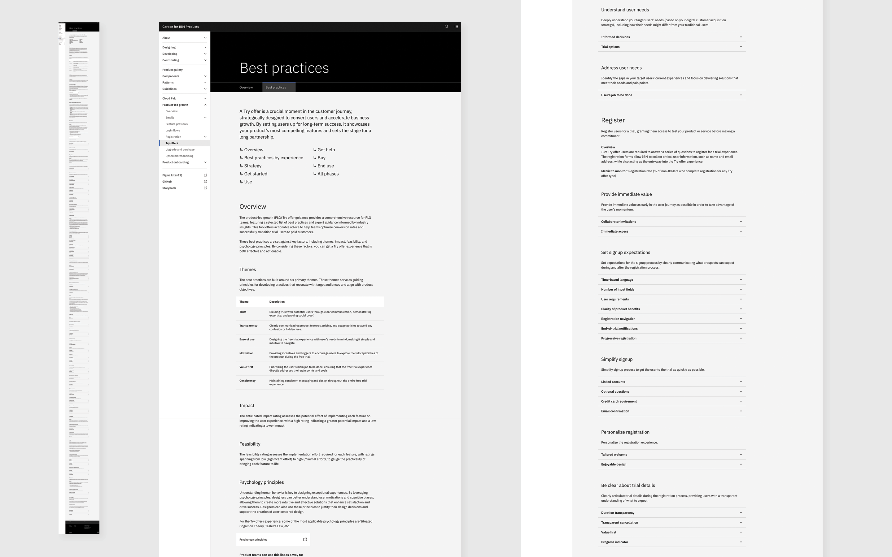
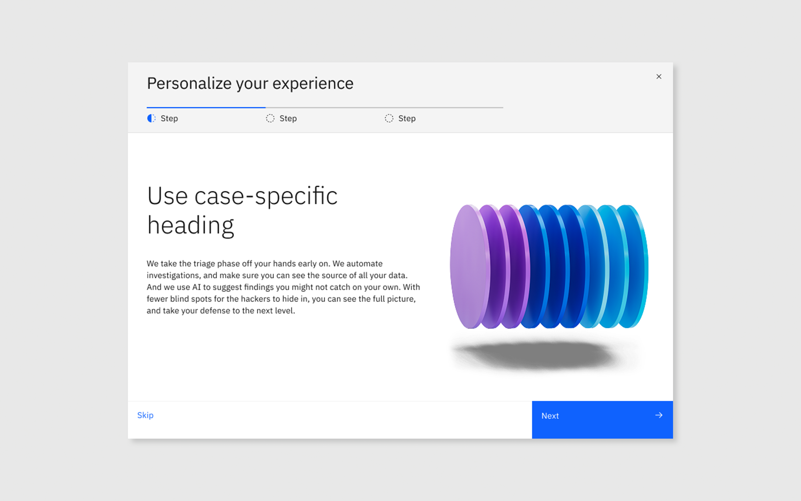

Context
IBM was betting on product-led growth. No one knew how to do trial onboarding consistently.
In 2024, IBM Software shifted to a Product-Led Growth model where users would evaluate and purchase products without talking to sales. That made the trial experience the most important touchpoint in the entire funnel.
The problem: every product team was building their own onboarding from scratch. Metrics were inconsistent. Best practices lived in people's heads. Time to value varied wildly. There was no shared standard, no reusable patterns, and no way to learn from what was working across the org.
I was selected to lead PLG Innovation Design a cross-functional effort to fix this at scale.
Research
Auditing 22 products to find what actually works.
I started with a systematic audit 13 external PLG products and 9 IBM products. I analyzed onboarding steps, content tone, personalization, speed to value, and where users dropped off.
Fewer steps increased completion. Products with 3 or fewer onboarding steps saw significantly higher activation rates than those with 5+.
Personalization increased trust. When users could tell the product something about themselves at the start, they engaged more and stayed longer.
Heavy technical language caused drop-off. Users who encountered jargon before understanding the product's value left and didn't return.

Design process
From research to a system that scales.
Published 100+ best practices to Carbon for IBM Products
Translated the audit into actionable guidance. Designers, PMs, and developers across IBM Software now had a single source of truth for trial onboarding decisions.
Created the Carbon Interstitial pattern
Designed the Interstitial the in-between experience users see after registration. It helps users personalize their journey by role, industry, or job to be done. Maximum 3 steps. Optional steps only when critical to the product.
Scaled the pattern across products
As teams adopted the Interstitial, I audited usage, interviewed teams, and evolved the pattern defining 3 primary use cases, adding Figma templates, and working with engineering to reduce friction across tech stacks.
Ran a weekly PLG Design Guild
Hosted a cross-org design guild where teams shared experiments, learnings, and challenges. This created a feedback loop that improved the pattern and built community across siloed teams.
Evolved Carbon guidance into tutorials
Long documentation wasn't working. I partnered with Carbon to redesign guidance as short tutorials steps, videos, Figma links, and code. This work directly shaped the 2026 Carbon site relaunch.

The Carbon Interstitial pattern

Previous documentation

New tutorial format on Carbon
"The best onboarding doesn't feel like onboarding. It feels like the product already knows you."
Principle I established for IBM PLG onboarding standardsOutcomes
Measurable impact across IBM Software.
Faster aha moment
IBM Instana users reached their key value moment 60% faster after implementing the Interstitial pattern.
Trial engagement increase
IBM Concert saw a 37% lift in trial engagement after adopting the onboarding best practices.
Revenue growth influenced
PLG Software org attributed approximately 10% revenue growth to improved trial and onboarding experiences in 2024.
Products influenced
The Carbon Interstitial pattern and onboarding standards were adopted by 39+ product teams across IBM Software.
At the platform level, this work scaled through Carbon reaching 450k+ monthly visitors, 640k+ GitHub repositories, and 324 IBM teams using Carbon globally.
My role
Design lead, researcher, facilitator, and systems thinker.
I owned this work end-to-end. I led the audit and research, defined the best practices, designed the Carbon pattern, ran the weekly Design Guild, interviewed adopting teams, and evolved the guidance into tutorials. I also partnered with engineering to reduce technical barriers to adoption.
The work required operating at multiple levels simultaneously designing individual screens, influencing org-wide standards, and building the culture of knowledge-sharing that made adoption possible.